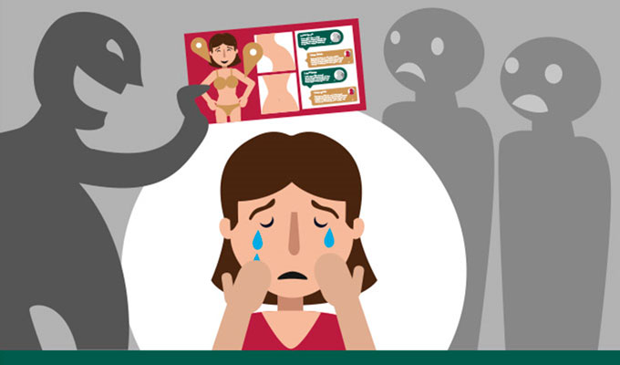

¿Qué es la violencia digital?
La violencia digital es una forma de agresión que se ejerce a través de tecnologías de la información y la comunicación, como las redes sociales, aplicaciones de mensajería instantánea (WhatsApp, Messenger, Telegram, etc.), correos electrónicos, sitios web, foros, videojuegos en línea y otras plataformas digitales. Su finalidad es dañar emocional, psicológica, moral o socialmente a una persona, ya sea mediante acoso, amenazas, manipulación, control, humillación o exposición pública sin su consentimiento.
Esta violencia no se limita a un grupo específico: puede afectar a personas de todas las edades, aunque en muchos casos las víctimas suelen ser mujeres, adolescentes y menores de edad. También puede estar vinculada a otros tipos de violencia como la violencia de género, el acoso escolar o el abuso de poder.
Tipos de violencia digital
| Tipo | Descripción |
|---|---|
| Ciberacoso | Mensajes ofensivos o amenazas constantes. |
| Suplantación de identidad | Crear cuentas falsas para dañar a alguien. |
| Sextorsión | Amenazas con imágenes íntimas para manipular. |
| Vigilancia digital | Espiar o controlar a alguien mediante tecnología. |
| Difusión de contenido íntimo | Compartir fotos privadas sin permiso. |
¿Cómo prevenirla?
Protege tu información personal, configura bien la privacidad en redes, no compartas contraseñas y denuncia cualquier comportamiento sospechoso.